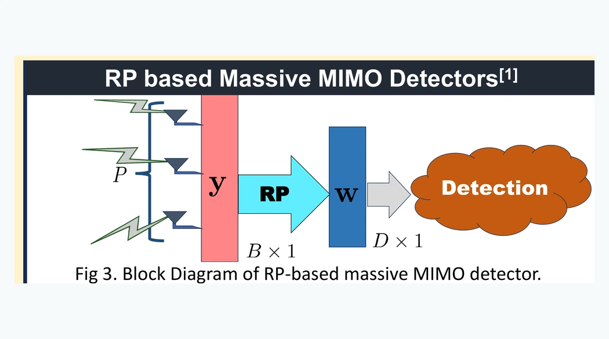
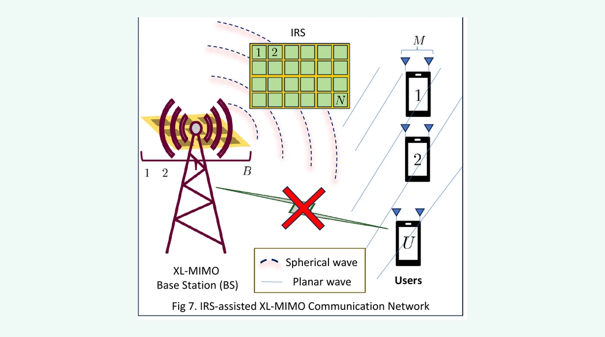
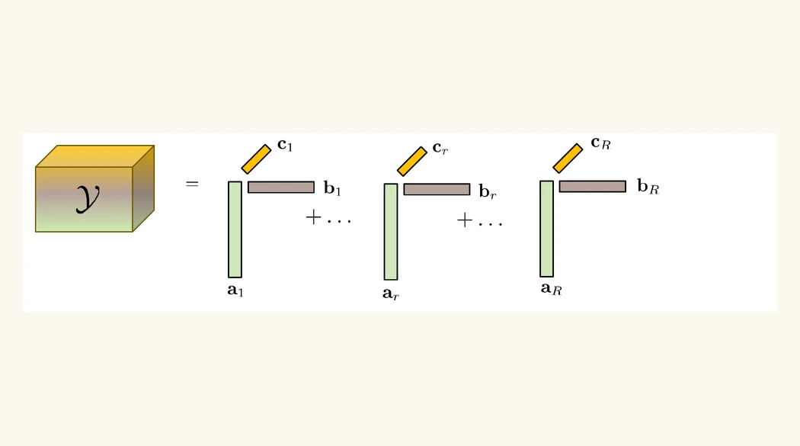

Random Projection-Based Fast Multi-User Detectors in Uplink Massive MIMO Communication Networks
G. Chamarthi, A. Patel, and R. Pratap
Publication details →I develop computationally efficient signal processing algorithms for large-scale wireless networks and tensor computations. My work combines randomized numerical linear algebra, structured least-squares formulations, and multilinear methods for scalable signal detection, channel estimation, and tensor decomposition.
Current affiliation: Project Associate-II, IIT Mandi.

Random projection- and sampling-based multi-user detectors, with analytical performance guarantees.
Explore research →
Structured channel estimation and low-pilot-overhead semi-blind detection using efficient least-squares updates.
Explore research →
Volume sampling and multilinear structure for efficient CP and Tucker decomposition.
Explore research →Paper accepted to TMLR — The paper “Scalable and Accurate CP Decomposition using Khatri-Rao Volume Sampling” is accepted to Transaction on Machine Learning Research (TMLR).
VTC paper published on IEEE Xplore — The paper “Fast and Accurate Channel Estimation in IRS-assisted XL-MIMO Communication Networks” was published on IEEE Xplore. DOI ↗
WCL letter submitted — Submitted “Sampling-based Low-Complexity Semi-Blind Detectors for IRS-assisted Massive MIMO Communication Networks” to IEEE Wireless Communications Letters. Manuscript details
Ph.D. thesis defended — Successfully defended my Ph.D. thesis, “Scalable Signal Processing Algorithms for Large-Scale and Intelligent Wireless Networks,” at IIT Mandi.
ANTS 2026 paper accepted — The paper “Kronecker Random Projection based Detector for XL-MIMO Communication Networks” was accepted at IEEE ANTS 2026. Paper details
VTC-Spring presentation — Presented “Fast and Accurate Channel Estimation in IRS-assisted XL-MIMO Communication Networks” at IEEE VTC-Spring in Nice, France. Paper details
G. Chamarthi, A. Patel, and R. Pratap
Publication details →G. Chamarthi, A. Patel, and R. Pratap
Publication details →G. Chamarthi, A. Patel, and R. Pratap
Publication details →Two manuscripts under editorial consideration
Manuscript details →